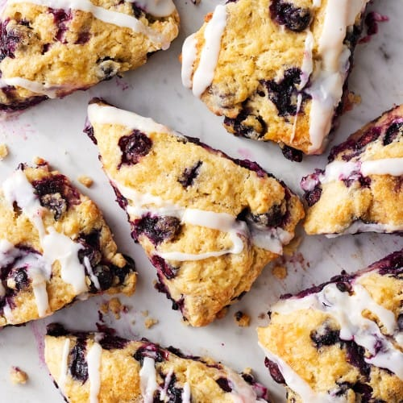

Scones

Blueberry scones drizzled with icing
Description
This simple recipes yields a batch of very soft, delicious and decadent scones
that can be served on their or with a variety of sides such as butter, whipped cream &
strawberries or grated cheese. These are perfect for any occasion and will have people
asking for more.
Ingredients
- 6 cups cake wheat flour
- 1 1/2 cups sugar
- 250g butter
- 400ml buttermilk
- 2 eggs
- A handful of blueberries
Steps
- Pre-heat oven to 180 degrees.
- Sift your flour into a big bowl and then add your sugar.
- Take your butter and while still cold, cut into small cubes.
- Add your cubes of butter into your dry ingredients, and start rubbing
the butter cubes and dry ingredients until you get a fine crumbly texture. Do not overmix.
- In a separate bowl, crack your two eggs, add your buttermilk and whisk together until smooth
- Add your egg buttermilk mixture into your flour-butter mixture and gently mix together.
- Mix until ingredients are well-combined, taking care not to overmix.
- Add your blueberries to your dough, gently mixing until they're well-mixed into the dough.
- Sprinkle some flour onto a flat surface such as a countertop, then take your dough and lay it on the surface.
- Roll your dough out using a rolling pin to your desired thickness.
- Using a cake scraper or a knife, cut the dough into the desired shape of your scones.
- Lay out your scones on a greased baking sheet and bake for 15-20 minutes at 180 degress.
- Drizzle scones with icing sugar (optional).
- Serve warm or wait until chilled.